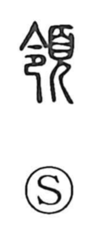

領

Kun: eri | On: ryo
collar ・ neck ・ domain ・ territory ・ jurisdiction ・ to govern
Explanation
領 combines 頁, the head, with 令 as its sound element. Its first meaning is the neck, especially the region where a collar lies. It therefore also names the collar or neckline of a garment.
The neck and waist are important points of the body. Together they give 要領, the essential points or organizing centre of something. From such a controlling point, 領 extends to leading, directing, and bringing matters under one’s command. A territory under that command is also a 領.
令 concerns receiving a divine command. The neck’s nod of assent joins receiving with accepting responsibility, and 領 can mean to receive or take possession. Taking something in mentally gives the further senses of grasping and understanding it.